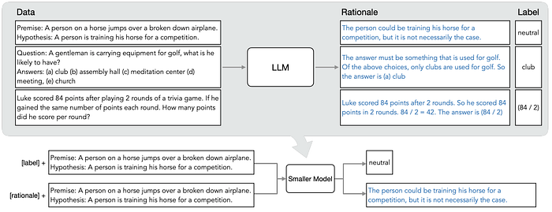
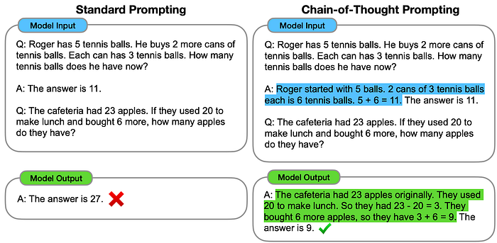
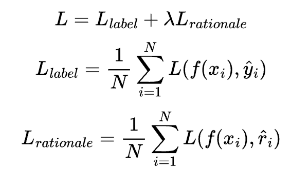
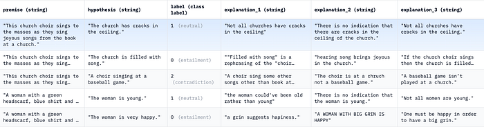
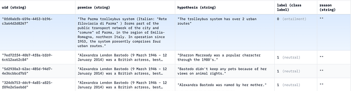
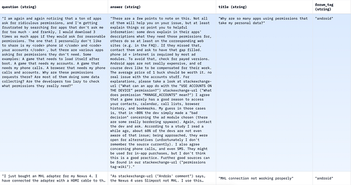
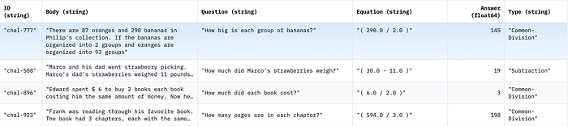

Distilling Step-by-Step: Paper Review
Exploring one of the most recent and innovative methods in LLM compression.
July 17, 2024 · Paper Review, Distillation
Authors
This blog post was written by Marcello Politi and Vijayasri Iyer.
Introduction
Nowadays, large language models are quite prominent. Recent trends in AI Research have shown that larger LMs have zero-shot generalization capabilities and emergent/common sense reasoning abilities. Currently, one of the biggest language models is the 540B PaLM model. Companies want to use Large Language Models (LLMs) and customize them to their use cases. The problem is that deploying and serving these models independently is not always feasible in terms of costs and specialized hardware.
Distilling Step by Step
In the recent paper by Google AI, “Distilling Step by Step”, the authors propose an approach to distill the knowledge of large models (540B PaLM) into a much smaller one (770M-T5, 6GB RAM).
What are the standard approaches?
There are two approaches that are used to adapt an LLM to a company-specific use case :
- Standard fine-tuning: The fine-tuning method involves introducing additional layers on top of a pre-trained model, which is trained using a supervised dataset. But it requires loads of computing and GPU RAM.
- Task Distillation: Large LLMs offer zero-shot capabilities. Task Distillation involves generating pseudo-labels with the large models and training the task-specific smaller model. In this case, the extracted rationales from the larger LM can be used as additional supervision for the smaller model. The disadvantage is that it lacks performance, generalizability, and emergent properties. Moreover, the method is compute-intensive since it requires that the LLM be deployed even at test/inference time.
In the distilling step-by-step paper, the authors reframe the problem of rationale generation as a multi-task problem with by using the LLM-generated rationales only at train time.

How does this work?
- The larger model acts as a teacher and provides the rationales using Chain-of-Thought prompting (CoT) that aids a smaller student model during training. This is because LLMs with a large number of parameters tend to have better reasoning abilities.

- The student model learns to produce an output label and the rationale simultaneously given some input text (multi-task learning). Specific “task prefixes” such as [label], [rationale] or ([label], [rationale]) are added to the input examples when training the smaller model to produce the outputs.
- This way, the student model learns to reason like the teacher and eliminates the need to deploy the teacher LLM completely during inference time.
Multi-task Learning is a learning paradigm where the model learns to perform multiple tasks/produce multiple outputs simultaneously at train time (labels and rationales). This model is trained using a weighted loss function given below :

where r_i is the rationale generated by the teacher LLM and y_i is the label.
Experimented Benchmarks
The authors experiment with the following 4 benchmark datasets and 3 NLP tasks :
e-SNLI: This dataset is an extension of the Stanford Natural Language Inference (NLI) Dataset to include human-annotated natural language explanations of entailment relations.

ANLI: Adversarial Natural Language Inference is a large-scale NLI benchmark dataset, collected via an iterative, adversarial human-and-model-in-the-loop procedure.

CQA: multiple-choice question answering dataset that requires different types of commonsense knowledge to predict the correct answers.

SVAMP: A challenge set for elementary-level Math Word Problems (MWP).

The distilling step-by-step method is compared against 2 approaches namely the standard fine-tuning and standard task-distillation. The authors compare varying sizes of T5 models: 220M T5-Base, 770M T5-Large, and 1B T5-XXL. The results are also compared against two baseline methods :
- Few shot CoT: Chain-of-thought prompting is an approach to improve the reasoning ability of large language models in arithmetic, commonsense, and symbolic reasoning tasks. The main idea is to include a chain of thought, a series of intermediate natural language reasoning steps, in the few-shot prompting process.
- PINTO Tuning: In this approach, a frozen medium-scale language model is prompted to generate rationales, on which a smaller LM is fine-tuned using the generated rationales, to function as a reasoning module. At inference time, this medium-scale LM generates a rationale which is used by the smaller LM to make a prediction.
The trained student model outperforms LLMs that are 2000x larger, on 4 different NLP benchmark datasets and tasks such as natural language inference, commonsense question answering, and arithmetic math word problems by using far fewer labeled and unlabeled training examples!
To know about the experiments and results in greater detail, please read the paper here: https://arxiv.org/pdf/2305.02301.pdf
Other Methods
There is great interest in methods to reduce the resources required to run new Machine Learning models, which are becoming increasingly large, such as LLMs. In the literature, there are several techniques for model compression. The most important ones are:
- Quantization: decreasing the precision of the weights to improve efficiency
- Pruning: involves reducing the number of weights by removing connections between channels, filters, and neurons.
- Knowledge distillation: how this technique works is that the trained model is called the “teacher” and the smaller model is called the “student”. The student is taught to minimize the loss function by training on ground truths and labeled truths in the network by the teacher.
- Low-rank tensor decomposition: a lot of repetitive, similar, and redundant outcomes can occur between different layers while training. This technique involves reducing the number of repetitive outputs by approximating the numerous layers, thus reducing the memory footprint of the network, resulting in highly efficient systems.
Final Thoughts
That’s all for now! If you liked this article, you might be interested in learning more about how to reduce the resources required to run new Machine Learning models. Techniques such as quantization, pruning, and low-rank tensor decomposition can help improve efficiency and reduce the memory footprint of large models. If you want to implement knowledge distillation, you can check out libraries like the following.
 GitHub - SforAiDl/KD_Lib: A Pytorch Knowledge Distillation library for benchmarking and extending…A Pytorch Knowledge Distillation library for benchmarking and extending works in the domains of Knowledge Distillation…github.comgithub.com
GitHub - SforAiDl/KD_Lib: A Pytorch Knowledge Distillation library for benchmarking and extending…A Pytorch Knowledge Distillation library for benchmarking and extending works in the domains of Knowledge Distillation…github.comgithub.com
 torchdistilltorchdistill (formerly kdkit) offers various state-of-the-art knowledge distillation methods and enables you to design…pypi.orgpypi.org
torchdistilltorchdistill (formerly kdkit) offers various state-of-the-art knowledge distillation methods and enables you to design…pypi.orgpypi.org
Follow us for more articles like this!
Marcello Politi
Vijayasri Iyer
This article was published on Towards AI